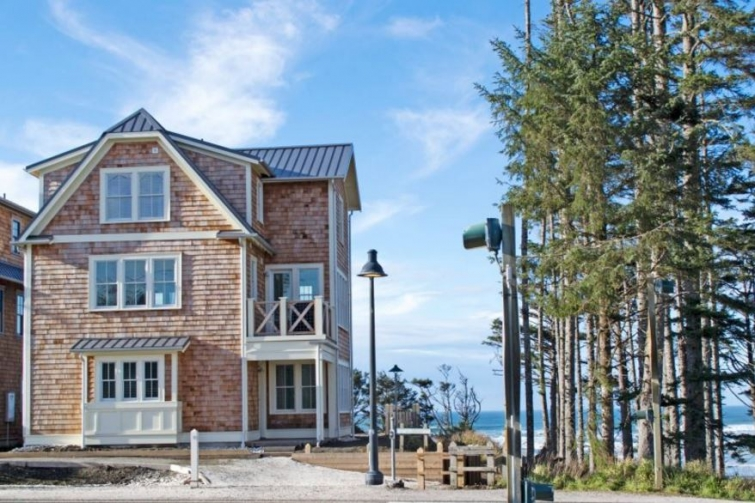
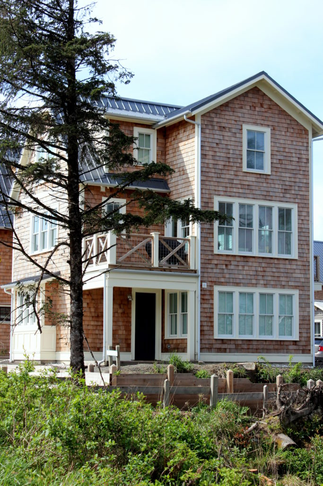
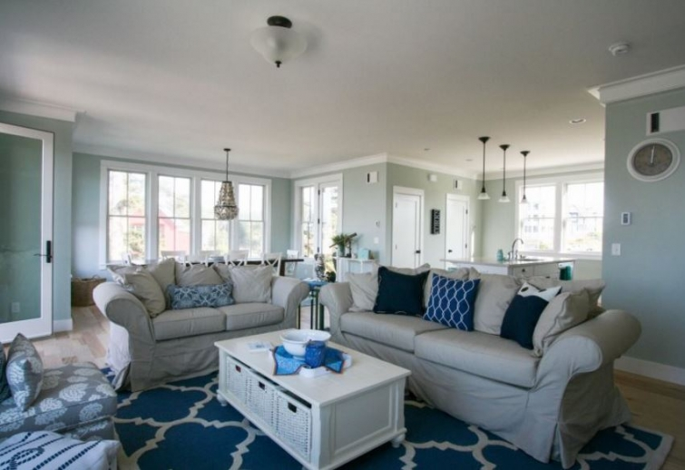

.png)
.PNG)
.PNG)
.PNG)
.PNG)
.PNG)
.JPG)
.JPG)
.PNG)
.PNG)


source
Welcome back for the final part of the Seabrook, Washington posts! It really really was a cute little town to visit and makes such a wonderful location for a Pacific Northwest beach vacation (or a place to live. 🙂 ) There are over a hundred homes from which to choose for your vacation home rental, and I have chosen just a few for you to see here today. So let’s get started!
Because Emily from JDC was the one who initially got me interested in Seabrook, I want to start with the home she and her family stayed in for spring break – Anchor Down.

The oceanfront home was decorated in soothing shades of blue. Here is the living room with the dining area and kitchen in the background.
source
Emily and her husband have 3 sons and one daughter, so I know they must have really enjoyed having the bunk room in Anchor Down.

If you would like to see more of Anchor Down just click on the source link below the photo above.
Next up is a cottage appropriately named A House By the Sea.
It sits right in front of the Beach Camp Cottages (which I sadly did not photograph while we were there. 🙁 ) Its living room is one of my favorites because it looks so “vintage nautical” in style.
The kitchen is a pretty space as well.
Again, if you would like to see more of the rooms, just click on the source link above.
Now this next one is huge. You can take your family and all your relatives with you because it sleeps 15! And the location is down-right amazing. It sits on that high bluff near the Idea Houses overlooking the Pacific. Take a look at Beach Bluff.
Just look at that view from one of the decks!
The colors of the sand and water are used throughout the beautiful interior of Beach Bluff.
Be sure you check out the rest of the house. It really should be in a magazine (if it is not already.)
Next up is a gray shingled house that looks like it should be located on Nantucket.
This one is called Down the Hatch. and there are ocean views from each of its three floors. Again we see blue as the dominant color in the decor. I especially love the wood ceiling and the trim on all the walls!
And don’t you love the retro refrigerator in the kitchen? 🙂
I said that Down the Hatch looked like it could be located on Nantucket, well the next cottage I want you to see is actually named The Nantucket House. 🙂 (And it too would fit right in with the gray shingled homes on Nantucket.)
It is located on that bluff overlooking the ocean just like Beach Bluff, and it may be even larger than it because The Nantucket House can sleep 18 guests. Notice that the owners used green shutters on the exterior and green accents on the interior.
And there is even a green island in the kitchen!
Ocean Song is the next house I want to share with you. The owners have thought of everything in this house. There is even an entry with a ramp at the back to accommodate wheelchairs and strollers, and the master bathroom has a roll-in shower.
Again, I was in love with the wooden ceilings and trimwork on the walls.
And what a fun bunk room it has!
Another home that can accommodate 18 guests is this very large one named The Beach House. It is located on that wonderful bluff with great views of the water.
The artwork and accessories give The Beach House an old nautical look.
With its retro styled appliances, the kitchen has more of a beachy look rather than a nautical one.
The master bedroom opens to a private deck overlooking the Pacific.
(Now that’s romantic. 😉 )
Now let’s leave the beach side of Seabrook and go over to the middle of town. Right next to City Hall is a colorful home called The Getaway.
I would think if you were getting married in City Hall, it would be very convenient to be staying right next door in this cute-as-can-be cottage. Of course all those pops of red had a fan in me!
The Washington House is the last home I want to share with you today. The old military housing in Fort Vancouver, Washington’s Officer’s Row was the inspiration for its design.
It is so big, I would think it could be an inn!
With 7 bedrooms and 5 1/2 baths, it can accommodate 20 guests.
Right from the front entrance you see the white painted paneling – all used to give the space the feeling of an old beach house.
And that brings us to the close of the Seabrook, Wahington posts. Did you like any of the rental houses? If so, do you have a favorite? What I really liked was all those clean white painted walls and ceilings. (Makes me want to paint all of our stained trim here white!)
Seabrook was not the end of our Pacific Northwest trip. Next up we will be headed to the Columbia River Gorge with a number of gorgeous waterwalls. I hope to see you back here for that very soon. 🙂
Until next time…


.PNG)
Nice, nice!! I think if I can pick – why not go BIG– Ocean Bluff— where all of us could go and enjoy!! Why not?! 🙂 I liked the blues of course and the white trim. Strange how white trim was what we had back in my childhood because it was not too costly to do and then the natural wood trims came along and now I only want white trim and in the process of changing out trim and doors to white! I feel it makes everything so bright and clean looking!! I’m still working on house projects that were delayed because of schedules and health issues but back on track again!! Taking down popcorn ceiling and getting the right look with paint has been a chore! Finally after 6 shades of paint samples I decided on a color -Smokestack– grayish beige for interior walls! I best like it because it is now ordered!!:) Your blog pictures are my treat and relaxing time interlude! So hot in FL! May as well stay in and paint!! Right?! Hope you are doing well. 💕
———————————————————————
You are sooo right about the white trim making everything bright and clean looking. It really makes a difference in a room, doesn’t it? So glad you are back on track with all your projects again. Popcorn ceilings are a major pain, so I do NOT envy you for that one. Hot hot everywhere. Yes, stay in the AC and paint. (We keep putting off starting on the outside here because it is too darn hot.)
Take care, and don’t fall off the ladder! 🙂
Kelly
Wow, what an exciting and adventurous trip you had! I love seeing the exteriors and interiors of all of these homes. I’m always drawn to clean white lines with pops of blue, so those type of photos always get my attention! I think I would enjoy staying in any of these beautiful homes!
———————————————————————-
Yes, you would enjoy staying in them Debbie. They are all so very cute! And I am with you. The clean look of blue and white can’t be beat.
Thank you for stopping in to read the post and leave your kind words here.
Kelly
These are all adorable! Love the traditional cottage exteriors and the casual cottage interiors. I, too, like the use of the painted wood (which I think is great for a coastal feel, but for a mountain, wooded, or lake location I still think stained or natural woodwork is nice). Hard to pick a favorite, but I loved the cozy living room of ‘A House by the Sea’ with its rock fireplace and bookshelves. Love the retro refrigerators in a couple of the others, too! Thanks for the tour!
——————————————————————-
Weren’t they?! I thought all the exteriors of every single cottage in Seabrook was cute. Loved that living room in A House by the Sea too. I’ve looked into those retro refrigerators Carolyn, but I am afraid they are quite out of our budget, but boy do they add charm to a kitchen!
Thanks for reading!
Kelly
Just stunning, all of them. Oh to dream:)
———————————————————————
Oh yes….they certainly had me dreaming!
Kelly
My favorite is the last home. I love older homes and history and that home looked like it had a history.
———————————————————————
That one did have the character of an older home Vicki. I don’t know if it was the architecture or the accessories they used in their decor, but whatever it was, it certainly did give that home character.
Thanks for reading and commenting! 🙂
Kelly
When I think of “coastal” I think of the east, but these homes are very “coastal” and very beautiful!! They are way prettier than the houses we’ve stayed in through the years. 😛 I love how white and bright and clean looking they are too. Each one is decorated perfectly too. Haha, I don’t think you will be painting yours any time soon. 😉 Can’t wait “to visit” the Columbia River Gorge next!!
———————————————————————
I’m like you Gina…I think East Coast when I think of coastal. I think these homes would probably fit on any beach area beautifully (but they still remind me of New England. 🙂 )
And you are right…we won’t be painting ours anytime soon…but I can always dream of building another one, right?
Columbia River Gorge is coming right up (just wish it hadn’t been raining when we were there.)
Have a great weekend!
Kelly
All the homes were beautiful.
I feel as though I toured the town with you.
Thanks for sharing.
————————————————————————-
Thank you for following along Margaret! I’m so glad you liked the houses!
Kelly
Kelly,
I feel as though I’ve actually visited this charming town. I would love more than one of the houses you’ve shared here today. Down the Hatch is lovely, but I also love Cottage by the Beach. Do I have to choose just one? 🙂
xo,
Karen
———————————————————————–
You need to go see it in person Karen. You would love love love it!! And no, you do not have to choose just one. Everywhere we turned there was another beautiful home. 🙂
Kelly
I couldn’t pick just one…I thought they were all lovely! They each had aspects that drew me in and made me feel like it would be a wonderful place to have a relaxing time away from home. Thanks for sharing, Kelly!
————————————————————————
Yes, picking just one is hard when they are all so pretty! It would be so nice to vacation there. I want to try out the restaurant when we go back. (Of course!) Thank you for reading and following along with us on our travels.
Hope your weekend is wonderful. 🙂
Kelly
A House by the Sea had my vote until I got to The Getaway, because I love red. They are all great in their own ways and I thoroughly enjoyed getting to glimpse “behind closed doors.” Thanks again!
—————————————————————-
Hard to choose, wasn’t it Karen?! LOL They really do have some cute cottages and pretty homes there in Seabrook. Thank you for stopping by to visit the blog today. I appreciate it!
Kelly
Oh goodness … Those are some of the prettiest rooms I’ve ever seen! Your trip just looks fabulous!
I LOVE white trim. In fact, of all the millions of things we needed to do in October when we moved, the first thing I sweet talked my husband into doing was painting all the woodstained trim white.
I can’t wait to see your waterfall pictures. My town is called the Land of Waterfalls.
I would love to visit all the places you have shown us. What a great trip! I am so happy you are really living it up! Isn’t retirement just awesome?!
———————————————————————–
I thought they were so pretty too Katrina. Our trip was a very good one….would love to be going back – especially to see our son. 🙂
I love white trim too and am really thinking hard about putting in some white around here, but I know we have to paint the exterior so that will probably get all my painting desires out of my system! LOL White makes such a difference in brightening up a space; doesn’t it? I’m so glad you were able to paint all that trim in your home project!
Retirement has been busy busy busy! My father was just saying that we have been on the road too much, but you never know when your health is going to stop you from traveling, so we are trying to fit in as much as we can now.
You should make a west coast trip Katrina. So good to hear from you! I hope your weekend is a good one. 🙂
Kelly
Omigosh — they were all outstanding, + my fave is the house with all the red. That exterior! I really have a thing for red window sashes. Meanwhile, I wondered if they had smaller cottages +/or carriage houses for just the 2 of us.
———————————————————————
Yay! I’m so glad you liked them Kay. Red just makes houses look so happy I think. 🙂 And they most definitely DO have small rental cottages – quite a few in fact. Check out The Crow’s Nest and also The Ladybug – just to name a couple. The Ladybug is oceanside, so it has a great location.
Happy Friday!
Kelly